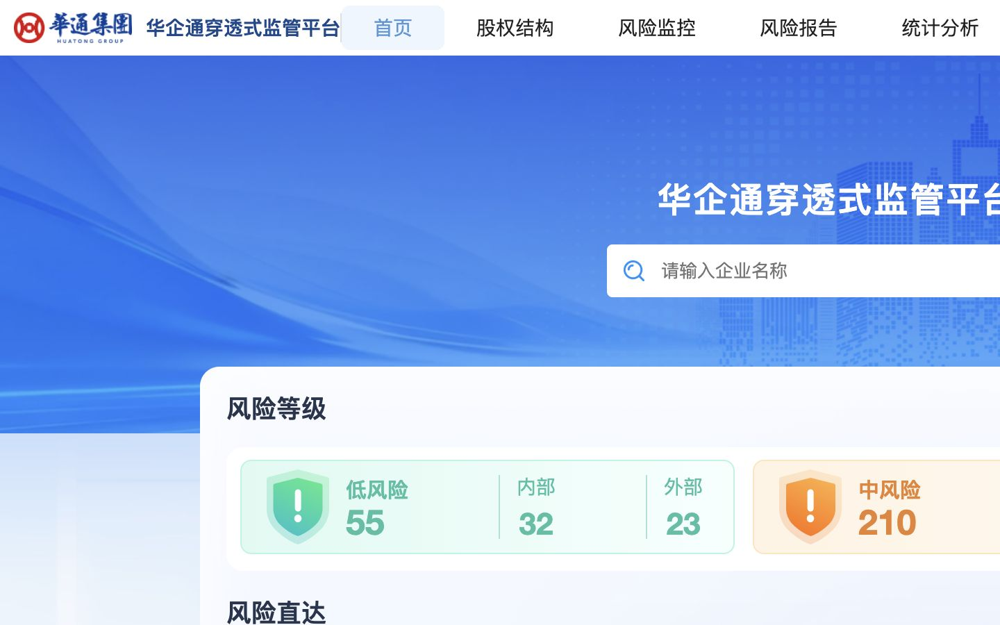
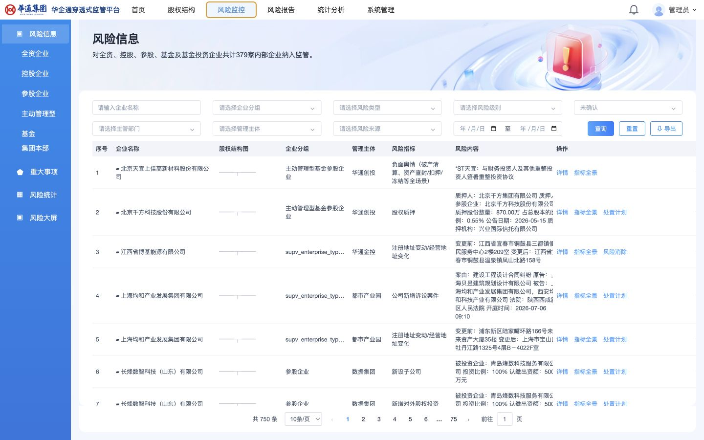
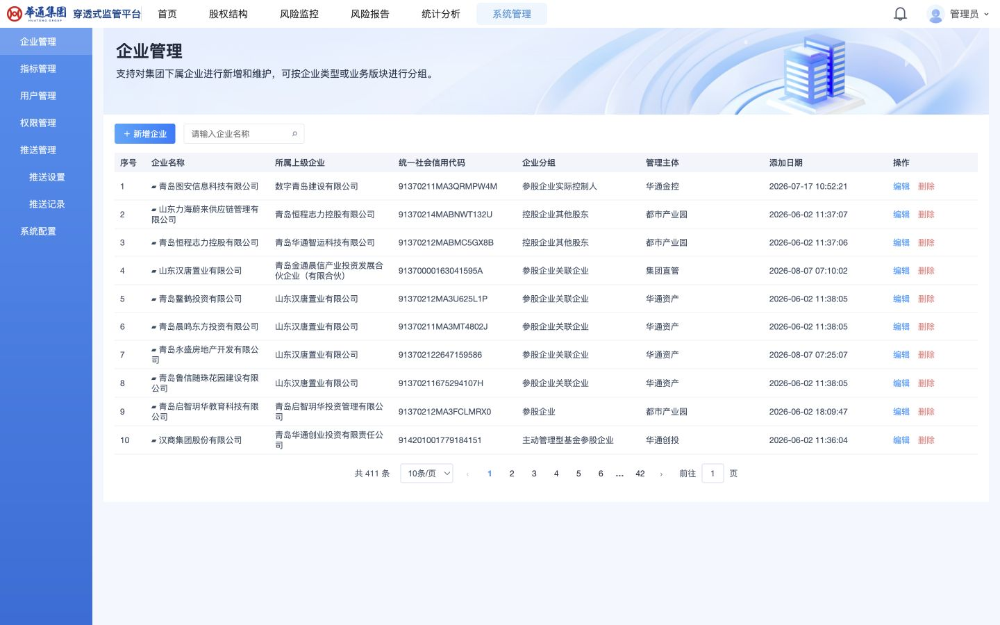
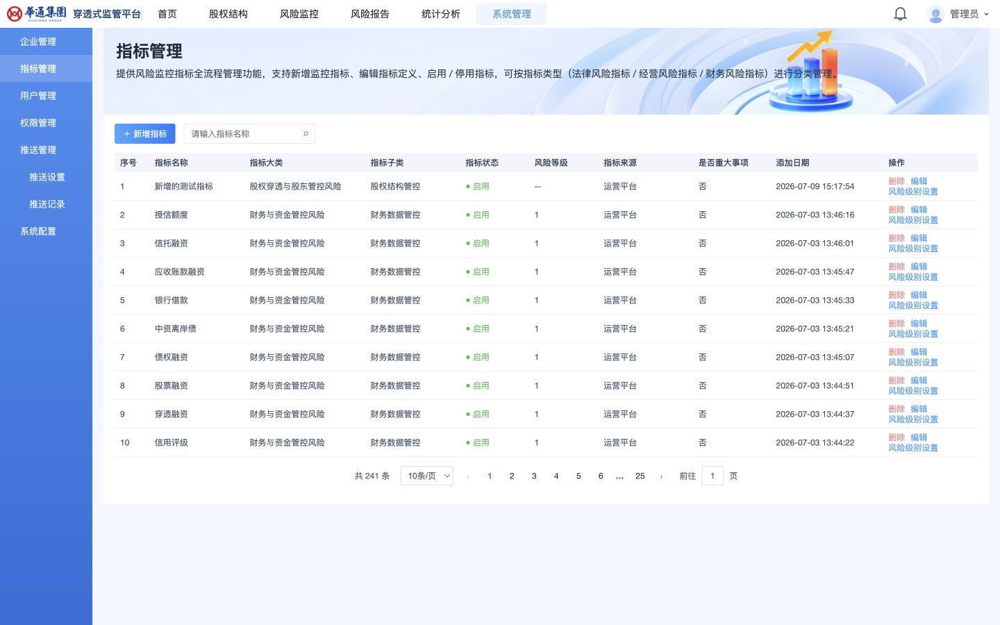
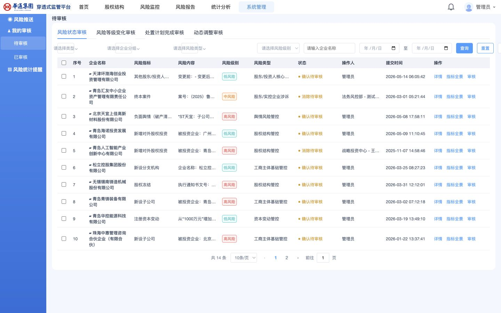
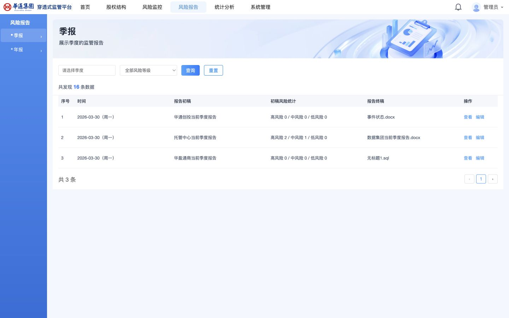

DAILY DELIVERY UPDATE · 2026 / 08 / 07
穿透式监管平台复刻项目｜当日进度汇报
统计口径：今日 09:00 至 15:00。当前已形成可启动的本地前端、风险信息业务界面及本地 API 兼容实现；首页和风险信息列表已在浏览器中实际打开验证。
本次开发规模
页面：9 个
首页、股权结构、风险监控（风险信息）、风险报告、统计分析、系统管理、企业管理、指标管理、待审核。首页的 #/ 与 #/index 为同一页面，未重复计数。
弹窗：14 类
风险监控 6 类（详情、指标全景、处置计划、风险确认、风险消除、情况描述）；企业/指标维护 5 类（新增、编辑、风险级别设置）；待审核 3 类（详情、指标全景、审核）。
接口：32 个
按本次开发接口清单统计，覆盖登录、企业/指标管理、风险查询、导出、审核及风险闭环操作；同一路径的不同请求方法分别计数。
前端有效代码：5,867 行
统计范围为 frontend/src 内的 TypeScript、TSX 与 CSS 源码；不包含 node_modules、dist 和静态素材。
后端代码：690 行
统计范围为 backend/src 和 backend/resources 内的 Clojure、EDN 与 SQL 源码；不包含文档和数据库文件。
统计说明
以上是当前本地实现规模，不代表全量原系统已复刻完成；后续新增页面、弹窗或接口时应同步更新本报告。
本日完成内容
已完成
本地前端骨架与首页
完成平台顶部导航、企业检索入口、风险等级卡片和“风险直达”入口；已接入本地静态素材并生成生产构建产物。
已完成
风险信息核心工作台
完成左侧风险分类导航、筛选栏、风险列表、分页以及随状态变化的“详情 / 指标全景 / 处置计划 / 风险消除 / 风险确认”操作入口。
已完成
管理与统计页面框架
已落地股权结构、风险报告、统计分析、系统管理及待审核等主菜单/二级菜单对应页面框架和表格展示结构。
已完成
本地 API 兼容层
补齐登录、风险分页/导出/审核、企业和指标管理，以及风险情况描述、确认审核、处置计划等接口路由和控制器实现。
已完成
风险闭环规格沉淀
新增风险信息操作列规格，记录详情、指标全景、处置计划、风险确认/消除、情况描述等可见交互与接口契约。
已验证
构建与页面运行
前端 tsc -b && vite build 成功；浏览器已验证首页和风险信息页正常渲染，风险信息页显示筛选、750 条总数、分页和状态化操作入口。
运行界面证据





#/sys/pendingReview）。可见风险状态、风险等级变化、处置计划完成和动态调整审核入口。
#/riskReport）。可见季度报告筛选、报告列表和查看/编辑操作。下一步主要工作（预计 1 天）
主任务 风险监控状态化操作限制与流程验证
- 依据 《核心风险处理开发说明》，在“风险监控 → 风险信息”中按风险主状态与处置状态限制可用操作，避免越级操作或终态后仍可继续流转。
- 覆盖情况描述、风险确认、确认审核、处置计划、处置完成审核、风险消除及风险等级调整等节点；按钮可见性、弹窗提交和接口校验保持一致。
- 按状态矩阵逐项验证正向、驳回和终态分支，核验状态变化、操作日志及待审核入口是否正确。
配套核对 数据库与接口边界
- 本项目约束要求不得修改既有
test1.sqlite的结构或数据；后续应复核风险闭环相关实现，确保不在应用启动时创建扩展表或执行迁移。 - 需单独启动本地 API 并以导入数据库进行端到端接口回归，确认接口数据、操作提交与原系统可见行为一致。
- 需继续从原系统只读巡检并下载真实素材，建立本地来源映射，完成视觉验收闭环。
汇报说明：“已完成”指代码和/或页面结构已落地；“已验证”仅指本报告中明确列出的构建或浏览器运行验证。尚未完成全量页面、移动端和原系统像素级比对，因此不将当前状态表述为整体 1:1 完成。